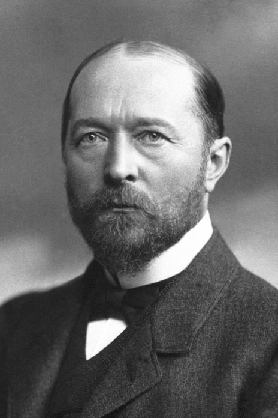
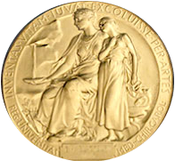

Nobelpriset
Nobelpriset i fysiologi eller medicin är ett av de fem Nobelprisen, inrättade genom Alfred Nobels testamente. Alfred Nobel specificerade att ett av prisen skulle gå till den som under det gångna året har gjort den viktigaste upptäckt inom fysiologiens eller medicinens domän
.
Pristagare utses av Nobelförsamlingen vid Karolinska institutet. Priset har utdelats sedan 1901. Pristagarna offentliggörs vanligtvis i oktober och priset utdelas den 10 december varje år i Stockholms Konserthus då pristagarna får motta priset ur konungens hand.
Alfred Nobel hade ett aktivt intresse för medicinsk forskning. Genom Karolinska Institutet kom han i kontakt med fysiologen Jöns Johansson runt 1890. Fysiologi/medicin-priset är det tredje som nämns i Nobels testamente.
 Motiv: Kungen delar ut Nobelpriset till medicinpristagaren May-Britt Moser.
Motiv: Kungen delar ut Nobelpriset till medicinpristagaren May-Britt Moser.Foto: Anders Wiklund/TT
Emil Adolf von Behring var den första personen att motta nobelpriset i fysiologi eller medicin för sitt arbete med att bota difteri.
Medaljen från Karolinska Institutet representerar den medicinska beskyddaren som håller en öppen bok i sitt knä och samlar vatten från en källa i en sten för att kunna släcka en sjuk flickas törst. Av de 222 personer som mottagit priset har fram till 2020 endast 12 varit kvinnor.
